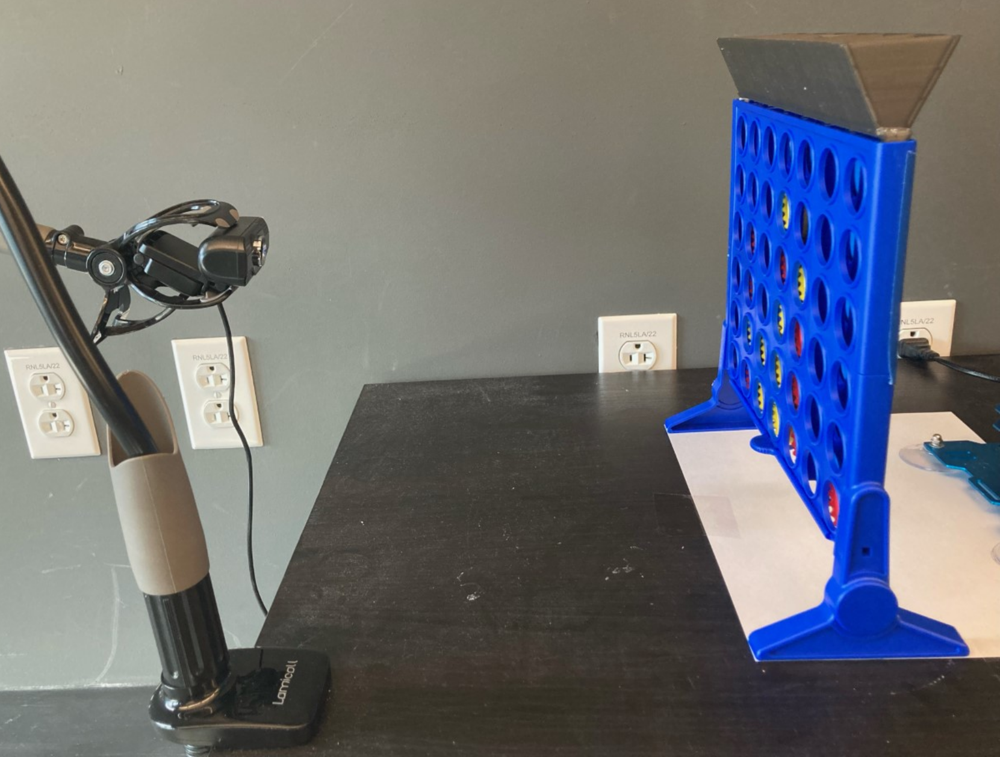
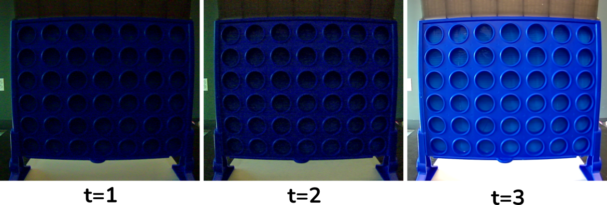
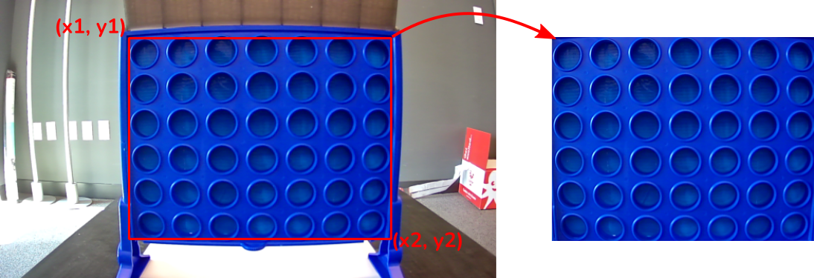
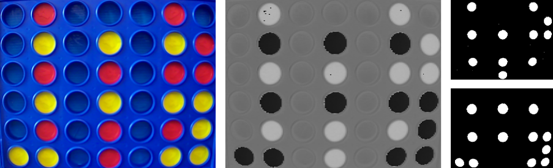
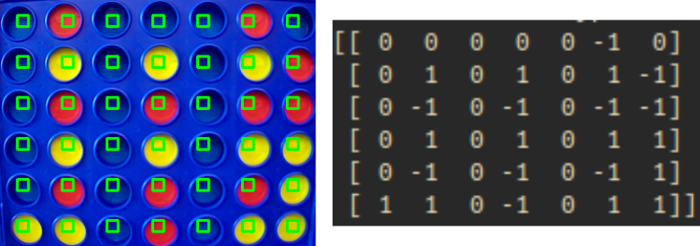
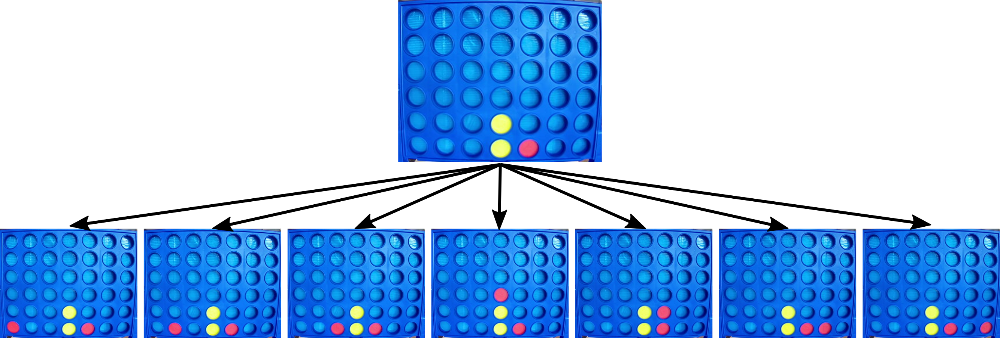
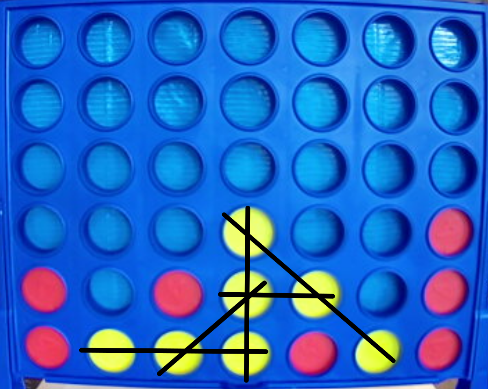
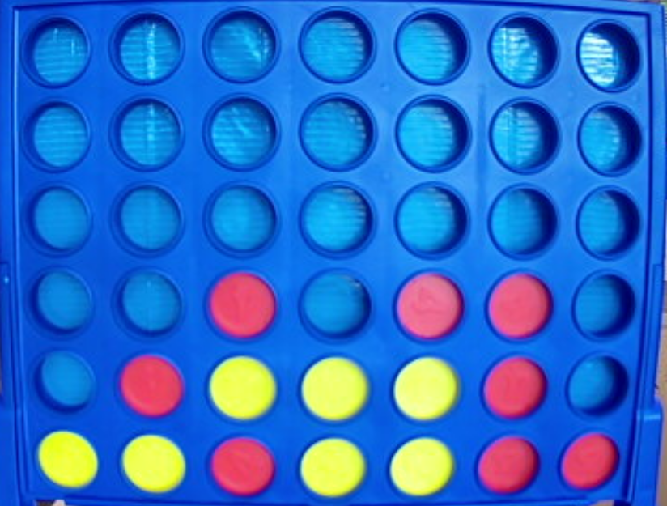
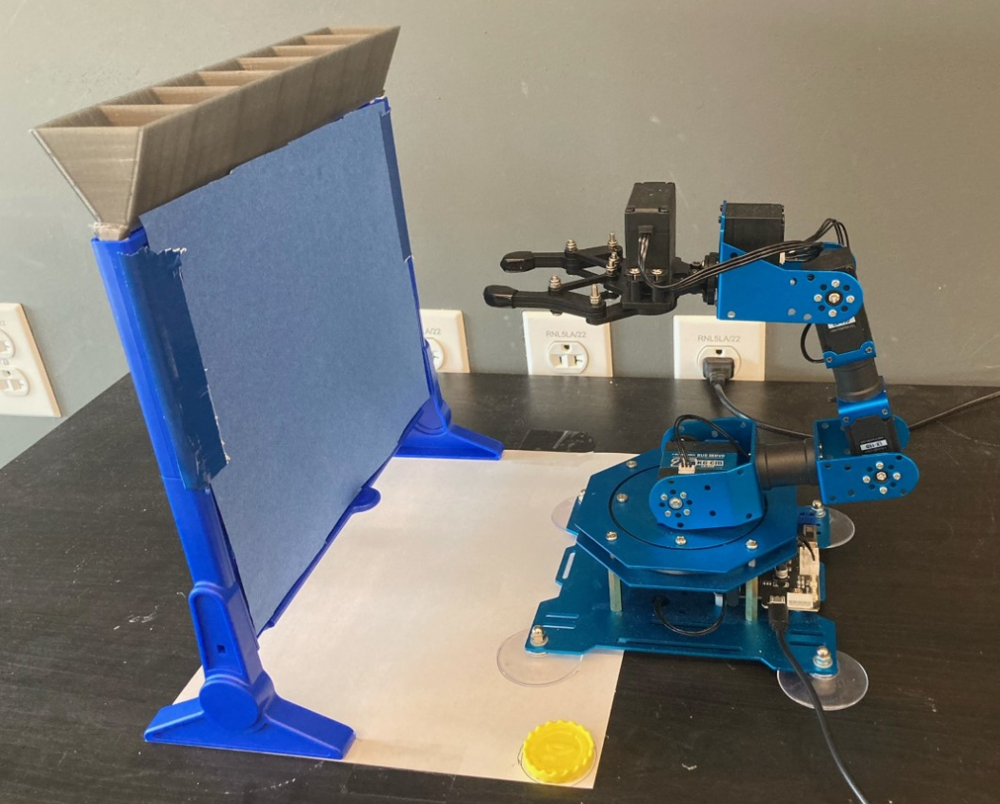
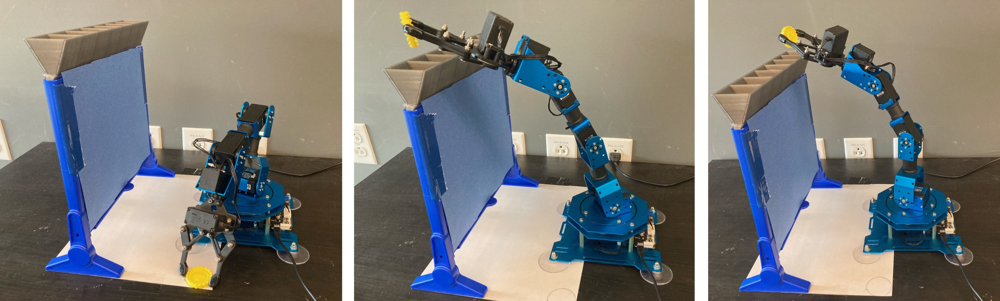

Playing ConnectFour with AI
[apologies, site currently under construction]Prerequisites: Introductory Python
Hardware Requirements: xArm robot, USB Camera (any webcam will work), ConnectFour Board, 3D printed funnel
Estimated Time: 30 hours
Skills learned: NumPy, OpenCV, Search Algorithms
Project Overview
In this project, you will program the robot to play ConnectFour. You will write an artificial intelligence algorithm that thinks multiple moves ahead and can often beat human opponents. This is a great project for beginner programmers that are interested in robotics. It touches on the three core functionalities of all robots: sensing, planning, and acting. Moreover, you will gain experience with two important Python libraries, NumPy and OpenCV, which are commonly used in the fields of robotics and artificial intelligence.This document is meant to guide you through programming a ConnectFour-playing robot. Keep in mind that the approach we follow here is only one of many possible ways to solve this problem. We encourage you to exercise your creativity and problem solving skills when deciding how to set up the hardware and write your functions. For instance, we have had some students use a camera stand, and others connect the camera to the robot hand. There were benefits to both approaches, but they ended up with slightly different code. If you feel stuck, refer to the solution code that we provide or reach out to us over email.
Reading Board State with Computer Vision
The robot needs to understand the state of the game in order to determine what move is best. While we humans automatically extract the location of pieces when we look at the board, this process is more complicated for the computer. The camera sends the computer images, which are multi-dimensional arrays with hundreds of thousands of pixels. The task here is to determine what information in the image can be used to determine the location of pieces in the 6-by-7 grid. Before you move to the next section, think through how you would approach the problem.Setting Things Up
The first step is to set up your hardware to capture images of the ConnectFour board. Position your camera such that it can see the board fully ( you will be able to double check this in the next section once we communicate with the camera in Python). Once you are happy with the camera 's view, we recommend that you fix its position relative to the ConnectFour board (in the below , a camera stand is used to fix the camera and markings on the table indicate where the board should be placed). It is very important that the camera and board do not move when you are creating your computer vision program.

Capturing Images
Now, let's write some code to capture images with Python. Fortunately, the OpenCV library provides a simple interface for communicating with most cameras. The code snippet below demonstrates how to capture and visualize images captured by the camera. Each camera is assigned a unique integer, so if you are using a laptop with a webcam, you may need to adjust cam_id to 1 or 2.
import cv2
cam_id = 0
cap = cv2.videoCapture(cam_id)
while True:
ret, frame = cv2.imread(cap)
if ret:
cv2.imshow('camera feed', frame)
cv2.waitKey(10)
For this project, there is no need to see a live feed of the camera. Instead, we need a function
that, given a capture object (e.g. a connected camera), returns an image. You may notice that
the first image captured is dark, which is caused by the camera auto-adjusting its brightness
levels; this will make it harder to detect pieces so we recommend discarding the first few images
captured. This phenomena is shown in below: the first two images (t=1 and t=2) are dark whereas
the third is well-illuminated.

Before moving on, double check that board represents at least 50% of the image and it is mostly
aligned with the grid of the board. Some webcams have a wide-angle lens causing the grid to
appear warped, which will complicate things later. There is a
process
to undistort the images, but it can be challenging. A simpler solution is to place more distance
between the camera and the board, which will reduce the warping.
Transforming/Cropping to Board
The next step is to crop the area of interest, i.e. the board, from the image. The process is illustrated in the figure below, and is realized by a function that takes the raw image as input and returns a smaller image that contains on the grid of the board. Because the image is stored as a multi-dimensional NumPy array, a technique called "slicing" can be used. Uncover hints as needed, and remember that Google search and StackOverflow are your bestfriends as a programmer :).

At this point, it should be clear why fixing the position of the camera and board are
important. Nudging either of them will introduce errors in the cropping operation.
Detecting Red and Yellow
Detecting the specific colors in an image is not as straightforward as it appears.**show example of different brightnesses**
Now that you have isolated the game board, it is time to identify where game pieces are. Fortunately, the pieces are unique colors, red and yellow, that stick out from the blue board. Thus, it is possible to identify pieces using the color at each grid cell. Use the function cv2.inRange to classify pixels as yellow or red, in the following section you will read this classification at each grid cell location. We recommend performing the classification from the HSV colorspace, where it will be more robust to variations in lighting (use cv2.cvtColor to convert)

Grid Readout
Write a function that takes the yellow and red- classified images, and outputs the symbolic state of the board. The state of the board should be represented as a 2D numpy array where 0 indicates empty, 1 indicates yellow, and -1 indicates red. It is recommended to look the a patch of pixels at each grid cell in case there is some inaccuracy in the color detection.

Determining Moves with Artificial Intelligence
Creating hypothetical boards
To evaluate the outcome of an action, we need a way to simulate what happens to the board when different moves are made. For ConnectFour, every move has a well-understood outcome: a piece is added to the highest row that is currently empty in the given column. The figure below shows the outcome of all 7 possible moves that red can make. We term these outcomes as hypothetical boards since they will be generated in the mind of the AI, as opposed to realized in the actual game being played. By considering hypothetical boards several steps in the future, the AI can select moves that are more likely to result in victory in the future and less likely to lead to a loss.Write a function that takes as input a board state, a column number and a piece color, and returns the board state that would be generated if that move were made. Hint: you should return a copy of the board state, so as not to affect the data.

Assigning score to Board States
For a game like tic-tac-toe, writing the function above to generate hypothetical future states would be sufficient to create an effective AI. Simply choose the move that results in the most future wins and fewest future losses. However, for more complex games like ConnectFour, such an approach is computationally infeasible since there are so many possible future states. The technical term used is the branching factor of the game, i.e. how many moves are available at each step. Since ConnectFour has a branching factor of 7, there are up to t^7 hypothetical future states after t moves, so a game that ends after 12 moves would have required imagining up to 7^12=13.8 billion moves.One way to get around this issue is to approximate the value of a non-terminal game state. Rather than simulating until a win or loss is achieved, we can assign some value based on how likely we think that the state will result in a win or loss. For instance, we might say that having 3-pieces in a row is good. This is known as a heuristic, and is developed by the programmer to guide the AI toward better behavior. Much thought and care needs to be put into creating heuristics for AI, since simple rules can have complex effects on the resulting behavior.
Write a function to evaluate the score of a board state. The input should be a board and the output should be a score (assume that the AI always plays as yellow, so a more positive score is better for the yellow player and a more negative score is better for the red player). Hint: an important intermediate calculation here is determining the number of pieces in a row that each player has.

One Step Lookahead
This is called a 'reactive policy'.Write a function that selects the move that results in the highest score out of all hypothetical next boards. Test
Recursion Minimax

Breaking Ties
It is likely that multiple moves may be be evaluated as producing the same best score. The simplest approach is to break ties arbitarily (e.g. select first column that achieves the best score). However, this behavior is not ideal and may be exploitable by the opponent. Try avoiding this predictable behavior by breaking ties with randomly. Hint: use `np.random.choice`. You may also observe that playing closer to the center of the board is better; try biasing the selection using the `p` argument of `np.random.choice` to assign more probabilities to columns that are closer to the middle.Testing and Refining
The simplest way to test it is to probe its decision at interesting board states, and start with a small search depth will it always find winning move? will it get trapped? does it block the opponent?Placing Pieces with Robot Arm
Standardizing position
Just as you did for the camera, it is important to standardize the position of the robot. The robot should be placed such that it can reach above the funnel along its entire length. We recommend using paper to mark the location of the robot's suction cups with respect to the board. You can also mark a location on the paper for where the robot will pick up the pieces.

Moving Arm
Joint Control End Effector Control

Picking up Piece
add feedbackPlacing Piece
parametrize by columnSystem Integration
The final step is to integrate all three parts together into a single program. Ideally, you should test each part individually and work through bugs before integration. After all, it is difficult to diagnose the cause of poor performance when it is unclear whether the board state was read incorrectly, the planning process is flawed, or the robot moved to the wrong position.State Machine
To integrate all three components, you should design a state machine. While the ConnectFour AI system may seem simple, it will be beneficial to carefully consider the control system logic. To do so, write a flow diagram that captures any core processing and decision points that must be made. The diagram should be able to handle any expected issues that may come up during operation. For instance, what happens if the robot fails to grasp the piece during an action or what if the opponent takes a long time to make a move.The flow diagram is a great mental exercise for understanding how you expect the system to operate. Morever, it is a good visual aid that can help you organize the implementation of the state machine.